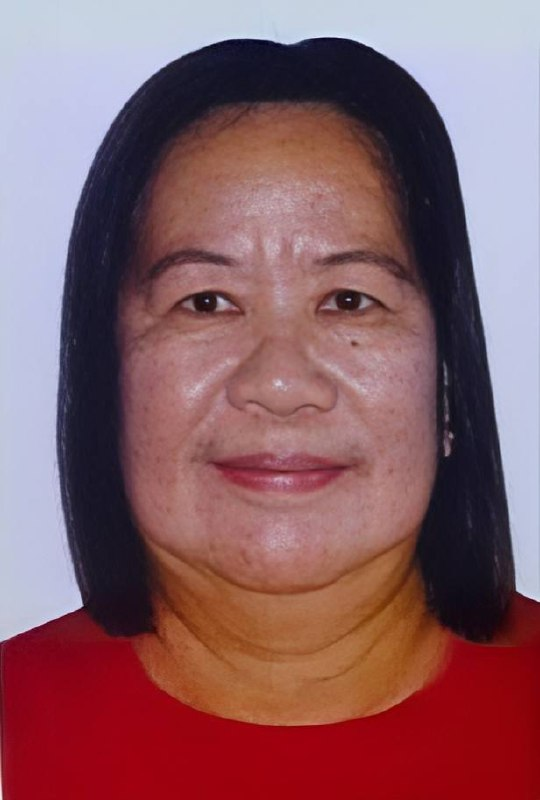
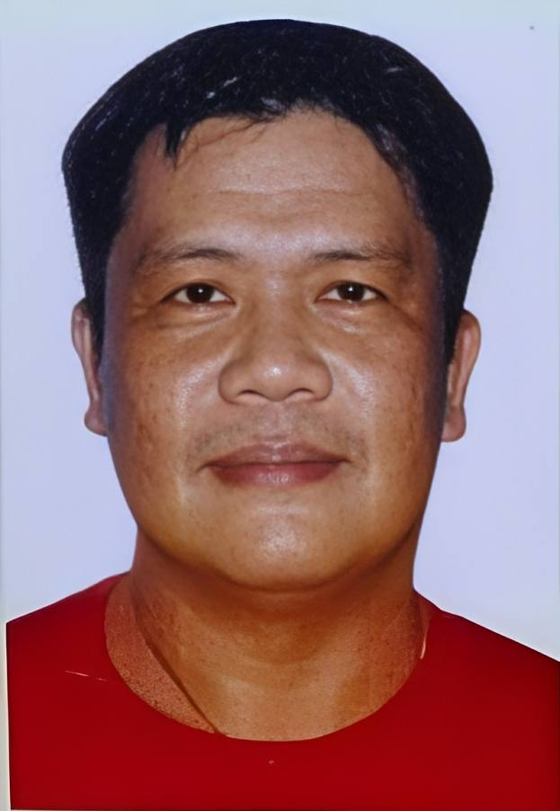
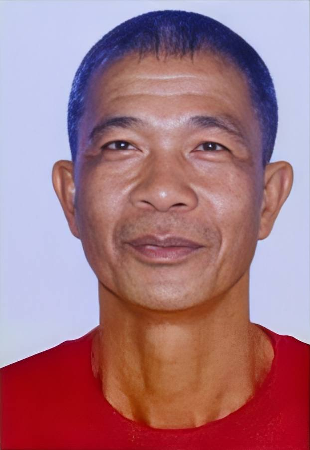
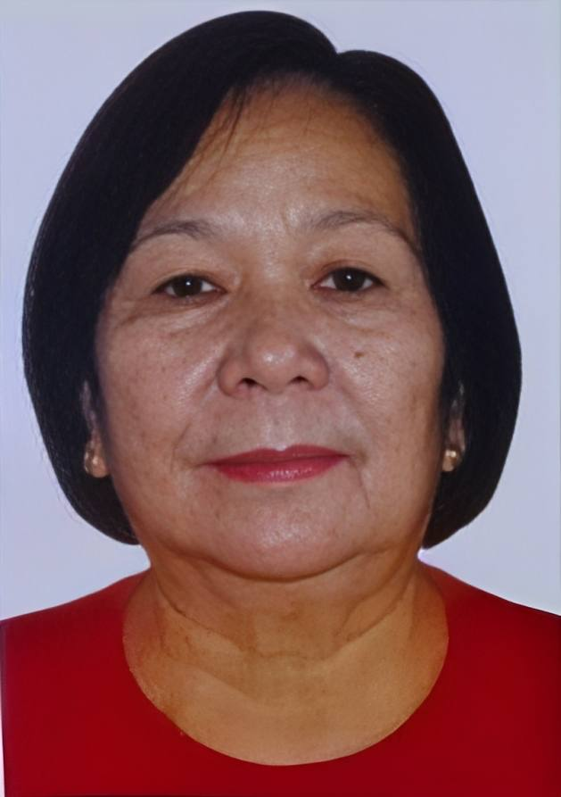
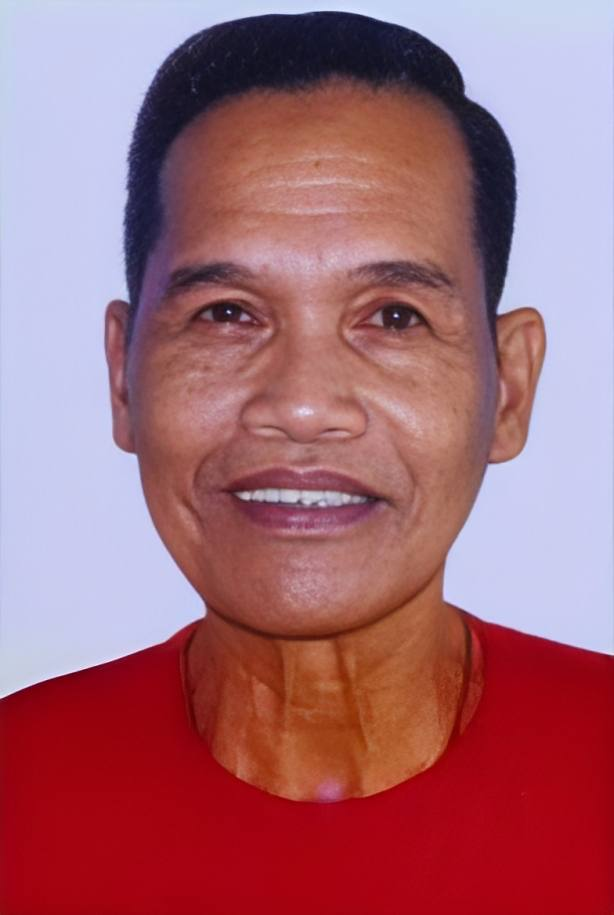

Barangay Bacag
Meet our Officials
Padilla, Raul O.
Brgy. Kapitan

Padilla, Basilisa M.
Brgy. Kagawad
Mortera, Bongbong M.
Brgy. Kagawad

Lucena, Aresto S.
Brgy. Kagawad

Dingle, Gervacio R.
Brgy. Kagawad
Lopez, Alexander O.
Brgy. Kagawad

Dizon, Charito M.
Brgy. Kagawad

Labiste, Manolo S.
Brgy. Kagawad